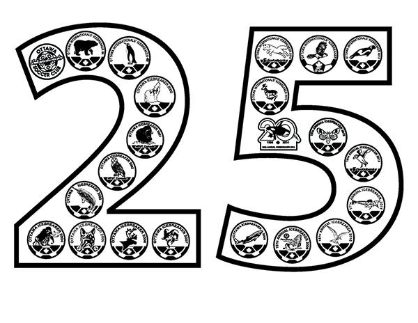

25th Anniversary Icebreaker Gear
To celebrate the silver anniversary of the Ottawa Icebreaker Soccer Tournament we are pleased to be able to selling the following items with this year's colour logo on them. All prices include the HST or GST.
Limited quantities of Icebreaker gear will be available at the tournament.
Richard Shorty (the artist)
Richard Shorty is an indigenous artist born in Whitehorse, Yukon Territory and belongs to the Northern Tutchone Tribe. He is a self-taught artist whose crest is Crow. Richard is one of the most sought-after Native artists, with works in many galleries. He is very versatile, working on drums, paddles, masks, rattles in addition to his paintings. His pieces are collected internationally.
Mr Shorty has graciously allowed us to use his image of the wolverine as the symbol for the 25th anniversary of the Icebreaker tournament.
His artwork can be found on the Art Country Canada website at http://www.artcountrycanada.com/shorty.htm
"25" logo
We have created a special "25" design that highlights all of our earlier logos within the lines of the numbers 2 and 5. This "25 design" is standard on the backs of all t-shirts and is optional on the sweat shirts and hoodies.

Return to Icebreaker Gear page.